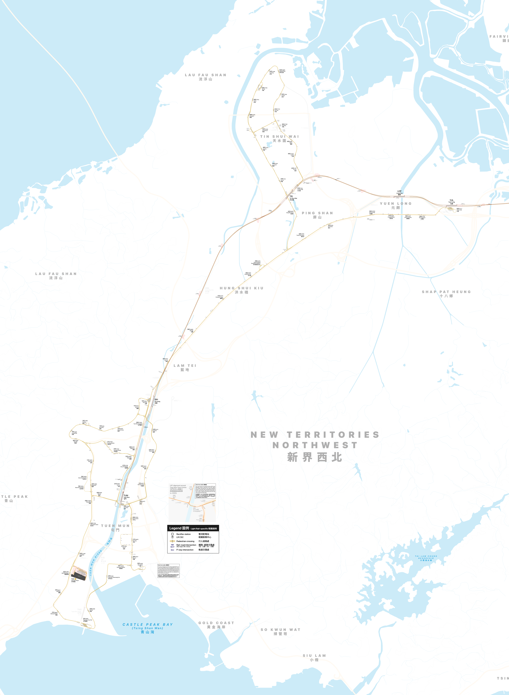

Light Rail Live
Tuen Mun · Yuen Long · Tin Shui Wai
--:--:--
Hong Kong time
← MTR network
Refresh
CONNECTING
Waiting for official Light Rail feed…
GeoTD live map
Official route map
Scroll to explore the track diagram
−
Fit map
+

About this map:
Train positions are estimated from live arrivals and the timetable. Select a train for its journey.
Official MTR Light Rail system map.
Live dots are ETA/WTT-inferred and snapped onto the rendered route lines; they are not GPS positions.
×